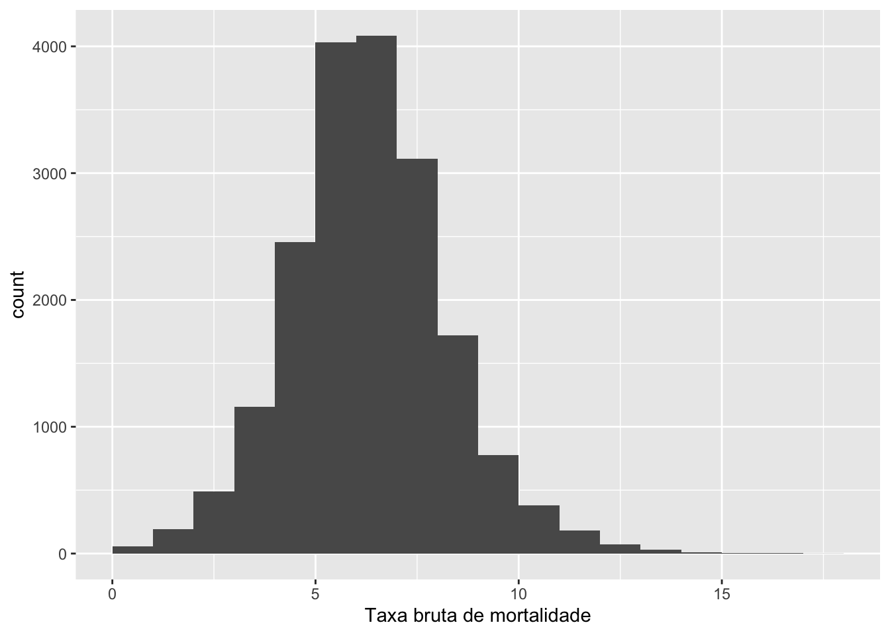
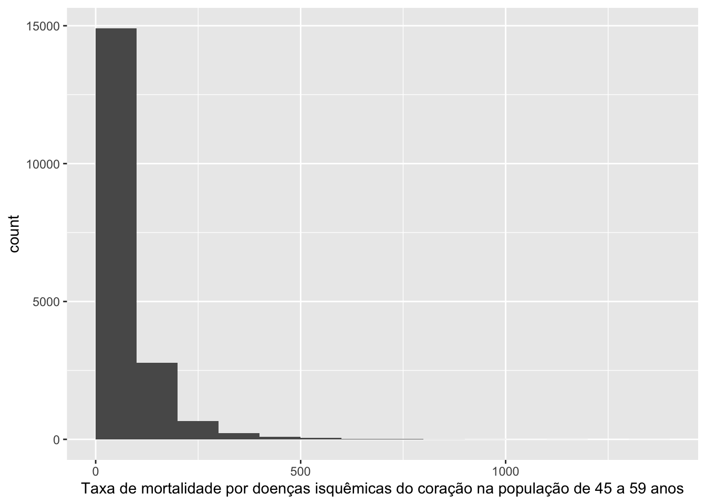

### Instalação e Carregamento do Pacote
# Lista de pacotes necessários
pacotes <- c('dataMaid', 'tidyverse', 'readxl', 'gt')
# Verifica se os pacotes estão instalados e instala se necessário
install.packages(setdiff(x = pacotes,
y = rownames(installed.packages())))
# Carrega os pacotes
lapply(X = pacotes,
FUN = library,
character.only = TRUE)3 Workshop: Crítica e Imputação de Dados: Pacote DataMaid
Tutorial Transformação Digital nº 2
Resumo
Neste tutorial, você aprenderá como utilizar o pacote DataMaid no ambiente R para a preparação de dados, uma etapa crucial na análise de dados. O DataMaid é uma ferramenta poderosa que auxilia na verificação e limpeza de dados, fornecendo um documento para análise da estrutura dos dados. Ele é capaz de identificar diversos tipos de erros e inconsistências nos dados, como classes incorretas, duplicatas, inconsistências de capitalização, valores improváveis, espaços em branco, indicadores de falta não reconhecidos e muito mais.
Contato: transformacao.digital@fjp.mg.gov.br
4 Introdução
Nesta oficina, aprenderemos como usar o pacote DataMaid no R para uma etapa prévia a crítica de dados: a preparação dos dados.
Tutorial disponível: https://github.com/vitor-marinho-fjp/Critica_Datamaid
O que é o DataMaid?
Um assistente de limpeza de dados capaz de fornecer um documento para ser lido e avaliado por uma pessoa. Uma ferramenta para auxiliar na lógica/verificação de erros tanto em colunas quanto em linhas. (Petersen e Ekstrøm 2019)
4.0.1 Exemplos de erros em verificações de dados para a limpeza de dados:
Classe incorreta
Duplicatas
Consistência de capitalização (Belo Horizonte vs Belo horizonte)
Valor improvável (peso = 1000, idade = 201)
Espaços em branco
Indicadores de falta não reconhecidos
Quantidade de faltantes (NA)
Observações/categorias únicas com contagem baixa
Dados imprecisos (data de falecimento antes da data de nascimento)
4.0.2 Inserção do dataMaid no Fluxo de trabalho em Ciência de Dados

Foco nos dois primeiros passos: Import → Tidy
5 Import/Tidy
5.1 Pacotes utilizados
Documentação:
5.2 Carregando os Dados de Exemplo Indicadores de Saúde
Disponível em: base_dados
dados_datamaid <- read_excel("dados/dados_datamaid.xlsx")
dados_datamaid%>%
head(5) %>%
gt()| CHAVE | IBGE6 | IBGE7 | ANO | S_TXBRUTAMORT | S_TXBRUTAMORTPAD | S_TXMOISQCOR45A59 | S_TXMOAVC45A59 | S_TXMOATRA15A29 | S_TXMOHOMI | S_TXMOHOMI15A29 | S_TXMOCANCOLUT | S_TXMOCANMA | S_TXMOCANPUL | S_OBITO60 | S_NASCBAIXOPESO | S_OBINFSIFILS | S_OBTETANONEO | S_OBRAIVA | S_INTERDVHID | S_INTERDRSAI | S_COBPSF | S_NASC7CONSUL | S_TETRA | S_POLIO | S_TRIPLICE | S_FAMARELA | S_OBMALDEF | S_OBITSEMASSIS | S_INTERDCV40 | S_INTERDIAB | S_INTERSAP | S_INTERSAP1A5 | S_INTERSAP60 | S_FRATFEMUR60 | S_CANCPROST | S_INTMEDCOMPLDESMIC | S_PARTODESLOCMIC | S_PENTA | S_TXMODCNT30A69 | S_ICSAB_MS |
|---|---|---|---|---|---|---|---|---|---|---|---|---|---|---|---|---|---|---|---|---|---|---|---|---|---|---|---|---|---|---|---|---|---|---|---|---|---|---|---|---|
| 2000310010 | 310010 | 3100104 | 2000 | 7.45 | 6.47 | 183.49 | 0.00 | 0.00 | 46.54 | 61.61 | 0 | 0.00 | 15.51 | 64.58 | 5.05 | NA | NA | NA | 0.19 | 0.87 | 0.00 | 88.89 | NA | 120.72 | 56.52 | 100.00 | 8.33 | 0.00 | 0.10 | 0.11 | 10.45 | 71.43 | 36.33 | NA | NA | NA | NA | NA | NA | NA |
| 2000310020 | 310020 | 3100203 | 2000 | 3.80 | 3.44 | 63.33 | 63.33 | 17.66 | 4.47 | 17.66 | 0 | 8.87 | 0.00 | 56.47 | 5.04 | NA | NA | NA | 0.29 | 0.75 | 42.43 | 33.42 | NA | 84.01 | 64.67 | 39.64 | 16.47 | 4.71 | 3.38 | 2.74 | 38.52 | 22.58 | 60.66 | NA | NA | NA | NA | NA | NA | NA |
| 2000310030 | 310030 | 3100302 | 2000 | 5.84 | 5.04 | 0.00 | 119.19 | 55.87 | 7.49 | 0.00 | 0 | 0.00 | 7.49 | 69.23 | 8.83 | NA | NA | NA | 8.60 | 8.39 | 47.39 | 22.61 | NA | 189.14 | 114.29 | 52.94 | 11.54 | 6.41 | 5.26 | 3.72 | 52.12 | 45.45 | 73.21 | NA | NA | NA | NA | NA | NA | NA |
| 2000310040 | 310040 | 3100401 | 2000 | 6.43 | 5.16 | 217.86 | 0.00 | 0.00 | 0.00 | 0.00 | 0 | 0.00 | 0.00 | 68.00 | 5.26 | NA | NA | NA | 2.61 | 3.04 | 0.00 | 63.16 | NA | 97.10 | 55.42 | 0.00 | 24.00 | 0.00 | 6.80 | 3.73 | 46.29 | 20.00 | 53.70 | NA | NA | NA | NA | NA | NA | NA |
| 2000310050 | 310050 | 3100500 | 2000 | 6.70 | 5.95 | 0.00 | 140.55 | 0.00 | 17.41 | 33.22 | 0 | 0.00 | 8.70 | 49.35 | 6.25 | NA | NA | NA | 0.29 | 2.34 | 12.51 | 17.50 | NA | 115.90 | 108.68 | 17.15 | 41.56 | 35.06 | 5.76 | 2.10 | 30.00 | 20.00 | 47.86 | NA | NA | NA | NA | NA | NA | NA |
5.3 Análise Inicial dos Dados
A função makeDataReport produz um relatório de visão geral dos dados em que resume o conteúdo do conjunto de dados e sinaliza possíveis problemas. Esses potenciais erros são identificados executando um conjunto de verificações de validação específicas da classe, de modo que diferentes verificações sejam realizadas em diferentes tipos de variáveis. As etapas de verificação podem ser personalizadas de acordo com a entrada do usuário e/ou tipo de dados da variável inserida
Para cada variável, um conjunto de funções de pré-verificação (controladas pelo argumento preChecks) é executado primeiro e depois uma bateria de funções é aplicada dependendo da classe da variável.
6 Extra: Personalizando o Report
Além da análise inicial, você pode criar regras personalizadas para a análise inicial dos dados.
Por exemplo, podemos verificar a variável S_TXBRUTAMORT
Trace a distribuição de uma variável.
standardVisual(dados_datamaid$S_TXBRUTAMORT, "Taxa bruta de mortalidade")
standardVisual(dados_datamaid$S_TXMOISQCOR45A59, "Taxa de mortalidade por doenças isquêmicas do coração na população de 45 a 59 anos")
6.1 Trabalhando com funções personalizadas
6.1.1 Funções de sumarização
Pode-se criar funções que seja do interesse a verificação. Por exemplo, um função para ocorrências de valores iguais a zero: countZeros()
Criando a função:
countZeros <- function(v, ...) {
val <- length(which(v == 0))
summaryResult(list(feature = "No. zeros", result = val, value = val))
}countZeros(dados_datamaid$S_TXMOHOMI15A29)No. zeros: 12322uma outra função útil seria a contagem dos valores atípicos (outliers) em uma variável numérica v usando a abordagem do intervalo interquartil (IQR) com um fator de limiar (threshold):
#Função para Identificar Outliers:
countOutliers <- function(v, threshold = 1.5) {
q1 <- quantile(v, 0.25)
q3 <- quantile(v, 0.75)
iqr <- q3 - q1
lower_bound <- q1 - threshold * iqr
upper_bound <- q3 + threshold * iqr
val <- length(which(v < lower_bound | v > upper_bound))
summaryResult(list(feature = "No. outliers", result = val, value = val))
}Além dessas, outras possibilidades são possíveis, por exemplo, criar uma função que calcule estatísticas (média, mediana, etc.) para uma variável numérica, segmentadas por grupos de uma variável categórica. Isso pode ser útil para entender as diferenças entre grupos:
calculateStatsByGroup <- function(data, numeric_var, categorical_var) {
stats_by_group <- data %>%
group_by({{categorical_var}}) %>%
summarise(
Mean = mean({{numeric_var}}, na.rm = TRUE),
Median = median({{numeric_var}}, na.rm = TRUE),
SD = sd({{numeric_var}}, na.rm = TRUE)
)
summaryResult(list(
feature = paste("Summary Statistics by", as_label(categorical_var)),
result = stats_by_group,
value = NULL
))
}6.1.2 Adicionando novas funções ao report
A inclusão das funções criadas anteriormente são realizadas da seguinte maneira:
makeDataReport(dados_datamaid, summaries = setSummaries(
character = defaultCharacterSummaries(add = c("countZeros", "countOutliers")),
factor = defaultFactorSummaries(add = c("countZeros", "countOutliers")),
labelled = defaultLabelledSummaries(add = c("countZeros", "countOutliers")),
numeric = defaultNumericSummaries(add = c("countZeros", "countOutliers")),
integer = defaultIntegerSummaries(add = c("countZeros", "countOutliers")),
logical = defaultLogicalSummaries(add = c("countZeros", "countOutliers"))
), replace = TRUE, output = "html")Error in quantile.default(v, 0.25) :
missing values and NaN's not allowed if 'na.rm' is FALSEFunções do DataMaid
| name | descrição |
|---|---|
| identifyCaseIssues | Identificar problemas |
| identifyLoners | Identificar variáveis com < 6 obs. |
| identifyMissing | Identificar valores ausentes mal codificados |
| identifyNums | Identificar variáveis numéricas ou inteiras classificadas incorretamente |
| identifyOutliers | Identificar outliers |
| identifyOutliersTBStyle | Identify outliers (Turkish Boxplot style) |
| identifyWhitespace | Identifique espaços em branco prefixados e sufixados |
| isCPR | Identify Danish CPR numbers |
| isEmpty | Verifique se a variável contém apenas um único valor |
| isKey | Verifique se a variável é uma chave |
| isSingular | Verifique se a variável contém apenas um único valor |
| isSupported | Verifique se a classe da variável é suportada pelo dataMaid. |
6.2 Recursos Adicionais
Documentação DataMaid - https://github.com/ekstroem/DataMaid
Documentação DataMaid : https://cran.r-project.org/web/packages/dataMaid/index.html
vignette("extending_dataMaid")7 Citação
Marinho,V.; Gonçalves, C. Preparação de Dados: Pacote DataMaid. Tutorial Transformação Digital. Fundação João Pinheiro, n. 2, 2023. Disponível em: https://rpubs.com/fjp/datamaid.
Petersen, Anne Helby, e Claus Thorn Ekstrøm. 2019. "dataMaid: Your Assistant for Documenting Supervised Data Quality Screening in R". Journal of Statistical Software 90 (6). https://doi.org/10.18637/jss.v090.i06.